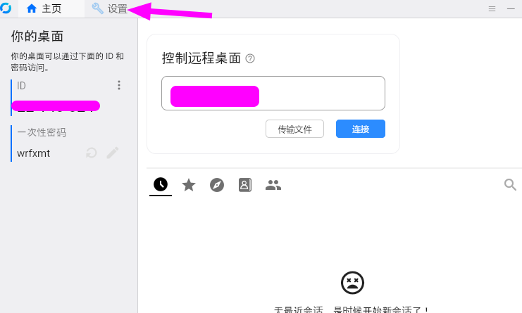
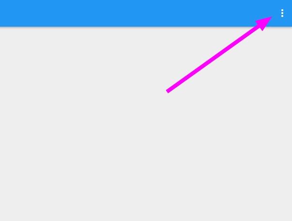
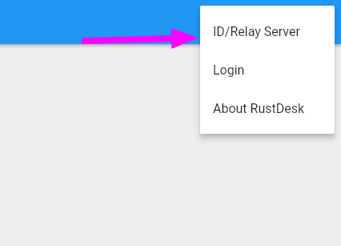
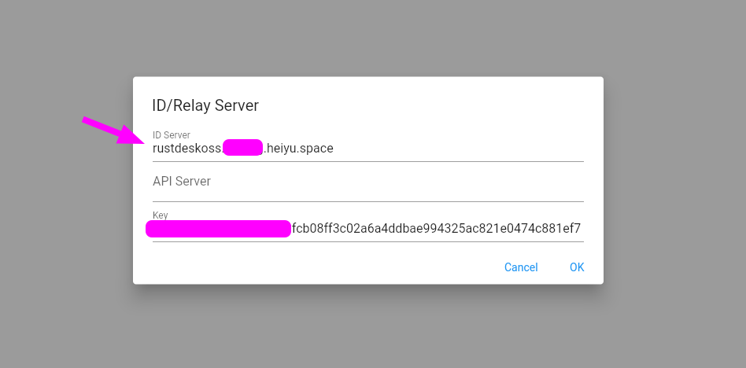
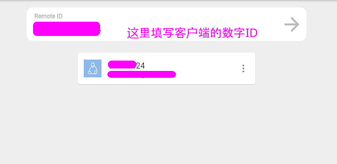

-
1. 安装 Rustdesk 的客户端
Archlinux 下，可以直接执行 pacman -S rustdesk
支持 Android, Windows, MacOS, iOS 各种系统。
点击打开下载界面
浏览器中可以直接使用 Web 客户端（目前 Web 客户端处于 Beta
阶段，推荐使用本地原生客户端进行访问）
-
2. Linux, Windows, MacOs 端打开 RustDesk 后点击顶部的设置按钮

点击网络 -> 填写对应的网络配置
ID服务器写您的
rustdeskoss.$name.heiyu.space
中继服务器可以留空，默认会从 ID/服务器 信息中推导.
目前是随机生成的 Key:

填写完成后，点击应用保存。
-
3. Web 客户端使用方式.
打开后，点击网页的右上角的菜单按钮

选择打开 ID/Relay Server 选项

填写服务器地址，这部分信息见前面 Windows, Linux, MacOS 配置内容

连接其他 RustDesk ID

填写完成后，点击右边的 -> 即能正常访问被邀请的机器.
-
4. 其他客户端相同的配置方式，配置完成后，就可以通过 ID
来控制别的电脑了